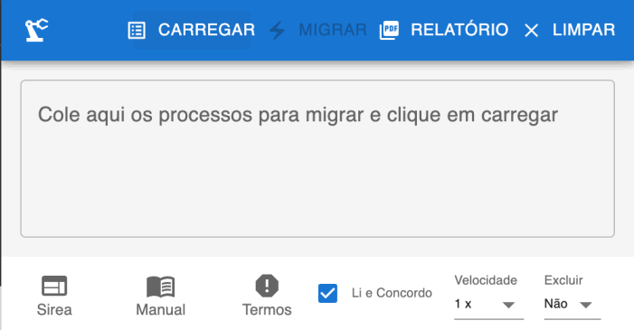
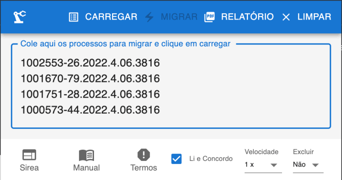
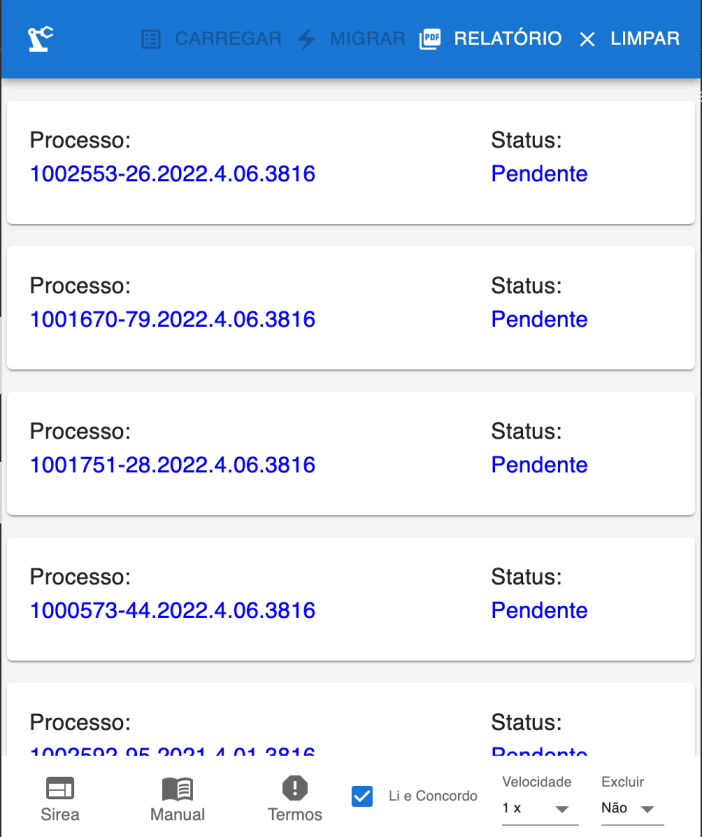
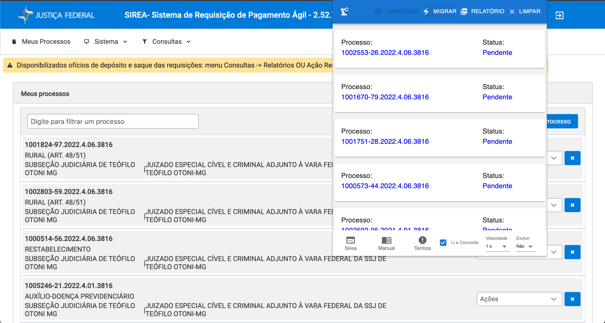
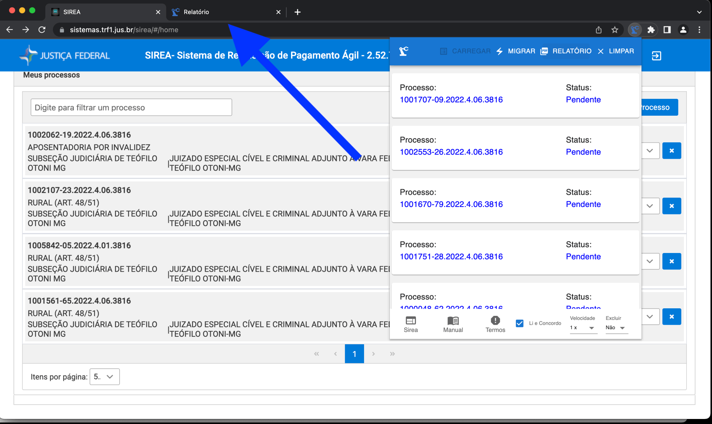

A presente extensão tem por objetivo automatizar as migrações de RPVs e Precatórios realizadas através do sistema Sirea. Trata-se de uma solução provisória, imperfeita, até que seja disponibilizada a migração em lote, tal como era possível no sistema Oracle. Além disso, a extensão também realiza a inclusão automática de processos para o magistrado, caso o processo não esteja incluído. Além disso, é possível habilitar a exclusão automática do processo da lista do magistrado ao final do processo de migração.
A extensão funciona, basicamente, através da automação de clicks. Não há qualquer tipo de acesso direto da extensão aos servidores do sistema oficial, alteração do comportamento normal da página web ou qualquer outro tipo de acesso, alteração ou armazenamento do dados oficiais.
A extensão não envia qualquer dado para servidores de terceiros, não armazena senhas ou dados pessoais. Para comodidade, apenas a declaração de leitura e concordância com os termos de utilização e a lista de processos e seus status são armazenada no repositório local do navegador Chrome.A esses dados, apenas o usuário tem acesso e podem ser apagados a qualquer momento através da desistalação da extensão.
Como a extensão não tem acesso aos servidores do sistema e não altera ou tem capacidade de alterar seu funcionamento, a espera entre um click e o carregamento da próxima página é realizada através de temporizadores. Os temporizadores foram configurados de forma a aguardar esse carregamento. No entanto, caso o sistema esteja sobrecarregado, a sequêcia de clicks pode falhar, gerando um status de erro. Não há qualquer invalidação do processo no sistema, basta reiniciar o processo de migração, através da extensão ou manualmente. Nesses casos é possível aumentar o tempo entre clicks através da opção velocidade. Porém, isso pode gerar falha na comunicação entre a extensão e o site do Sirea.
Da mesma forma, como a extensão não acessa os servidores do sistema, não é feita qualquer validação de números de processos, decurso de prazo, disponibilização de RPV ou Precatório para migração. Única validação realizada é quanto ao número de dígitos de cada entrada fornecida.
1) Carregamento da lista de processos colados em 5.
2) Inicia o processo de migração dos processos carregados.
3) Gera o relatório dos processos e seus status em uma nova aba.
4) Limpa a lista dos processos carregados.
5) Campo para colagem da lista dos processos a serem migrados.
6) Abre a página do Sirea em nova aba.
7) Abre o manual em nova aba.
8) Abre os termos de uso em nova aba.
9) Declaração de leitura e concordância com os termos de utilização.
10) Velocidade da automação dos clicks.
11) Opção para excluir o processo da lista do magistrado ao final.
1) Carregamento
Ao iniciar a extensão, é preferível que a página do Sirea já esteja aberta e o usuário logado.
Na primeira vez, a extensão é iniciada com a lista de processos vazias. Nos acessos seguintes, eventuais processos devem ser apagados através do botão LIMPAR.
A lista de processos a serem migrados deve ser colada na caixa de texto, UM PROCESSO por linha. Eventuais caracteres não numéricos e linhas em branco serão descartadas. Portanto, não é necessário se preocupar com a formatação, pontuação e etc. Basta que haja APENAS UM número de processo por linha.
Após colar a lista de processos, deve-se clicar em CARREGAR, que realizará o processamento do texto colado e disponbilizará a lista de processos a migrar. Caso alguma linha não tenha o número correto de caracteres numéricos, seu status será de erro.

2) Migração
Caso já não esteja logado e com a página do Sirea em primeiro plano, deve-se clicar no ícone do Sirea, logar e reabrir a extensão. As popups de extensões somente ficam abertas em primeiro plano e são reiniciadas caso percam o foco. Assim, apenas após carregar os processos, deve-se clicar em outra página (Após o carregamento a lista de processos fica armazenada localmente no navegador).Antes de iniciada a migração é possível escolher a velocidade e se haverá ou não exclusão do processo da lista do magistrado ao final. A migração só é possível se houver concordância com os termos de uso.
A página do Sirea e, PRINCIPALMENTE, a popup da extensão devem ficar abertas durante todo o processo de migração. Seu fechamento interrompe o processo. A lista dos processos e seus status ficam salvos. Entretanto, o fechamento pode interromper o processo de migração a qualquer momento, podendo gerar inconsistência entre o relatório e o efetivo status do processo.
Processos com status de "Erro" ou "Migrada" não são enviados para migração
Acionado o botão de migração, os botões da extensão ficam indisponíveis até o final do processo. Ao final o relatório pode ser gerado em nova aba. A partir dessa aba pode ser gerado um pdf ou sua impressão.
IMPORTANTE: Como
3) Relatório
lkashdfkljahsdk
lajkfshdlkfj
;lafksjdlkfjlsd
lkashdfkljahsdk
lajkfshdlkfj
;lafksjdlkfjlsd
lkashdfkljahsdk
lajkfshdlkfj
;lafksjdlkfjlsd
lkashdfkljahsdk
lajkfshdlkfj
;lafksjdlkfjlsd
lkashdfkljahsdk
lajkfshdlkfj
;lafksjdlkfjlsd